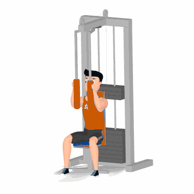

Voador / Peck Deck

Exercício para fortalecimento e hipertrofia da região peitoral, com enfoque aos músculos peitoral maior e menor. Realize no aparelho com auxílio de roldanas e possibilita maior isolamento dos músculos dos peitorais. Indicado a praticante de musculação nível iniciante e intermediário.
Ficha Técnica
Tipo: Musculação
Grupo Muscular: Peito
Aparelho: Nenhum
Músculos: Nenhum
Como realizar
- Sente no aparelho com as costas apoiadas no banco e os ombros encaixados para trás;
- Posicione os pés sobre o suporte ou apoiados no solo;
- Agarre os pegadores e posicione os cotovelos flexionados no apoio lateral;
- A altura do banco ajustada para que os braços fiquem em paralelo ao solo;
- Empurre os pegadores para dentro com a força dos músculos peitorais, até que eles fiquem próximos um ao outro;
- Retorne à posição inicial e repita os movimentos.
 RC STORE
RC STORE